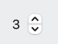
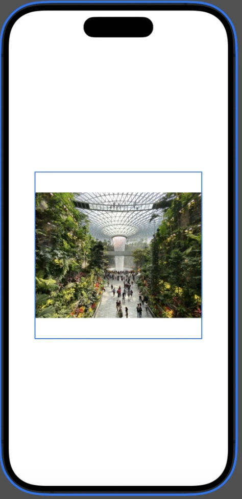
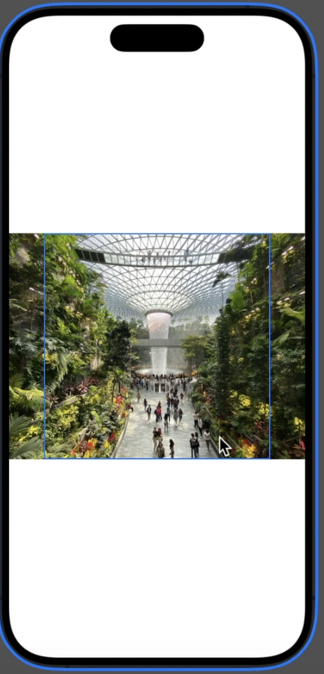
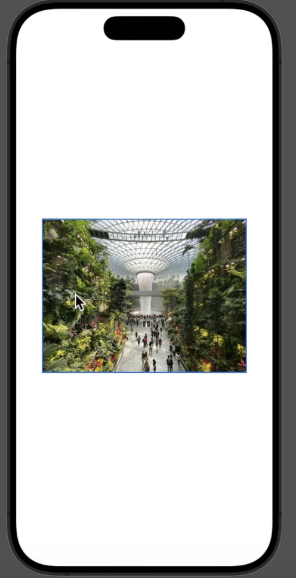

SwiftUI Cheatsheet
Im Juni 2025 begann ich mit dem Kurs 100 Days of SwiftUI. Es ist ein großartiger Kurs, und ich bin wirklich beeindruckt, wie viel qualitativ hochwertiger Inhalt und Kurse Paul Hudson bereitstellt und pflegt!! Paul, vielen Dank dafür! 🙏🏼
Aber es ist eine Menge Inhalt, daher hier meine Notizen - hoffentlich in einem leicht navigierbaren Spickzettel-Format. Ich habe eine grobe Struktur im Kopf, werde den Inhalt jedoch nur dann ausfüllen, wenn ich ihn benötige. Erwarten Sie also keine vollständige Übersicht!
Swift
Für einen umfassenden Überblick siehe Lernen Sie essentielles Swift in einer Stunde.
Im folgenden Kapitel habe ich nur die Teile hinzugefügt, die ich mindestens einmal überprüfen musste.
struct & berechnete Eigenschaften
struct Employee {
let name: String
var vacationAllocated = 14
var vacationTaken = 0
var vacationRemaining: Int {
vacationAllocated - vacationTaken
}
}
Optionals
- Optionals ermöglichen es uns, das Fehlen von Daten darzustellen, was bedeutet, dass wir sagen können „dieser Integer hat keinen Wert“ – das ist anders als eine feste Zahl wie 0.
- Beispiel:
var str:String?kann einen String oder nil enthalten - Folglich hat alles, was nicht optional ist, definitiv einen Wert, selbst wenn es nur ein leerer String ist.
- Das Auflösen eines Optionals ist der Prozess, in eine Box zu schauen, um zu sehen, was sie enthält: Wenn ein Wert darin ist, wird er zur Verwendung zurückgegeben, andernfalls wird nil enthalten sein.
- Wir können
if letverwenden, um Code auszuführen, wenn das Optional einen Wert hat, oder guard let, um Code auszuführen, wenn das Optional keinen Wert hat – aber mit guard müssen wir danach immer die Funktion verlassen.
func printSquare(of number: Int?) {
guard let number = number else {
print("Eingabe fehlt")
return
}
print("\(number) x \(number) ist \(number * number)")
}
- Der nil-Koaleszenz-Operator, ??, löst ein Optional auf und gibt dessen Wert zurück oder verwendet stattdessen einen Standardwert.
let new = captains["Serenity"] ?? "N/A"
- Optional Chaining ermöglicht es uns, ein Optional innerhalb eines anderen Optionals mit einer praktischen Syntax zu lesen.
- Wenn eine Funktion möglicherweise Fehler wirft, können Sie sie mit try? in ein Optional umwandeln – Sie erhalten entweder den Rückgabewert der Funktion oder nil, wenn ein Fehler auftritt.
Protokolle und Erweiterungen
protocol Vehicle {
func estimateTime(for distance: Int) -> Int
func travel(distance: Int)
}
extension String {
func trimmed() -> String {
self.trimmingCharacters(in: .whitespacesAndNewlines)
}
}
Arrays & Sortierung
Alle Arrays haben eingebaute sort() und sorted() Methoden, die verwendet werden können, um das Array zu sortieren.
sort()sortiert das Array an Ort und Stellesorted()gibt ein neues, sortiertes Array zurück.
Wenn das Array einfach ist, können Sie sort() direkt aufrufen, wie hier, um ein Array an Ort und Stelle zu sortieren:
var names = ["Jemima", "Peter", "David", "Kelly", "Isabella"]
names.sort()
Wenn Sie komplexere Strukturen haben, müssen Sie den Vergleich mitgeben:
struct User {
var firstName: String
}
var users = [
User(firstName: "Jemima"),
User(firstName: "Peter"),
User(firstName: "David"),
User(firstName: "Kelly"),
User(firstName: "Isabella")
]
users.sort {
$0.firstName < $1.firstName
}
Wir können unsere eigenen Typen Comparable konform machen, und wenn wir das tun, erhalten wir auch eine sorted() Methode ohne Parameter. Dies erfordert zwei Schritte:
- Fügen Sie die
Comparable-Konformität zur Definition von User hinzu. - Fügen Sie eine Methode namens
<hinzu, die zwei Benutzer nimmt und true zurückgibt, wenn der erste vor dem zweiten sortiert werden soll.
So sieht das im Code aus:
struct User: Identifiable, Comparable {
let id = UUID()
var firstName: String
var lastName: String
static func <(lhs: User, rhs: User) -> Bool {
lhs.lastName < rhs.lastName
}
}
Strings
- Sie sind besonders, und es gibt viel zu wissen...
- Das funktioniert nicht:
let name = "Paul"
let firstLetter = name[0]
Daten
Date, DateComponents und DateFormatter
SwiftUI
- Interactful ist ein schönes Tool, um die verschiedenen Views & Komponenten zu navigieren und auszuprobieren.
- Human Interfaces Guideline
Views
- Alles ist eine View in SwiftUI 😜
- Code ausführen, wenn eine View angezeigt wird, mit
onAppear().
Sogar ForEach ist eine View, deshalb können wir schreiben
ForEach(0..<5) {
Text("Zeile \($0)")
}
Hinweis: Wir können nicht ForEach(0..<5) schreiben, weil ForEach einen Range<Int> erwartet, nicht einen ClosedRange<Int>!
ForEach View
ForEach ist eine View, die aus den Unteransichten besteht, die in jeder Schleifeninstanz erstellt werden.
Wir verwenden es typischerweise, um Unteransichten basierend auf einem Zähler oder einem Array zu erstellen.
ForEach mit einem Array:
import SwiftUI
struct ContentView: View {
let items = ["Apfel", "Banane", "Kirsche"]
var body: some View {
List {
ForEach(items, id: \.self) { item in
Text(item)
}
}
}
}
Dateneingabe
Stepper

Ein Stepper ist ein zweigliedriges Steuerelement, das Menschen verwenden, um einen inkrementellen Wert zu erhöhen oder zu verringern.@State private var count: Int = 0
var body: some View {
Stepper("\(count)",
value: $count,
in: 0...100
)
}
DatePickerfür Daten. Verwenden des ParametersdisplayedComponents, um Daten oder Zeiten zu steuern.FormPicker-
Navigationsleiste
Listen
Scrollende Datentabellen mit List erstellen, insbesondere wie sie Zeilen direkt aus Datenarrays erstellen kann.
List {
Section {
Label("Sonne", systemImage: "sun.max")
Label("Wolke", systemImage: "cloud")
Label("Regen", systemImage: "cloud.rain")
}
}
Buttons in Listen: Wenn Sie einen Button in eine Liste setzen, wird das GESAMTE Listenelement anklickbar! Wenn es mehr als einen Button in einer Liste gibt, wird, wo immer Sie auf das Listenelement klicken, ALLE Buttons nacheinander geklickt!
Um das zu beheben und das gewünschte Verhalten zu erhalten, verwenden Sie .buttonStyle(.plain)
Das Gleiche gilt für HStack:
HStack {
if label.isEmpty == false {
Text(label)
}
ForEach(1..<maximumRating + 1, id: \.self) { number in
Button {
rating = number
} label: {
image(for: number)
.foregroundStyle(number > rating ? offColor : onColor)
}
}
}
.buttonStyle(.plain)
Bilder
struct ContentView: View
{
var body: some View {
Image (example)
.resizable ()
.scaledToFit ()
.frame(width: 300, height: 300)}
}

Ersetzen Sie ScaledToFit durch ScaledToFill und erhalten Sie

struct ContentView: View {
var body: some View {
Image (•example)
.resizable ()
.scaledToFit()
.containerRelativeFrame(horizontal) { size, axis in
size * 0.8
｝
}
}

Werkzeugleiste
Bundle
Dateien aus unserem App-Bundle lesen, indem wir ihren Pfad mit der Bundle-Klasse nachschlagen, einschließlich des Ladens von Strings von dort.
Animationen
Behandelt in Tag 32-34. TODO Ich muss die Clips noch einmal ansehen, um meine Notizen/Spickzettel zu extrahieren.
- Animationen implizit mit dem
animation()-Modifikator erstellen. - Animationen mit Verzögerungen und Wiederholungen anpassen und zwischen Ease-in-Ease-out- und Federanimationen wählen.
- Den
animation()-Modifikator an Bindungen anhängen, um Änderungen direkt von UI-Steuerelementen zu animieren. withAnimation()verwenden, um explizite Animationen zu erstellen.- Mehrere
animation()-Modifikatoren an eine einzelne View anhängen, um den Animationsstapel zu steuern.
Daten laden
Wenn es synchron ist:
View...
.onAppear(loadIt)
?? Wie wird es gemacht, wenn loadIt asynchron ist??
Netzwerk
So senden Sie etwas an einen HTTPS-Endpunkt:
func placeOrder() async {
guard let encoded = try? JSONEncoder().encode(order) else {
print("Bestellung konnte nicht kodiert werden")
return
}
let url = URL(string: "https://reqres.in/api/cupcakes")!
var request = URLRequest(url: url)
request.setValue("application/json", forHTTPHeaderField: "Content-Type")
request.httpMethod = "POST"
do {
let (data, other) = try await URLSession.shared.upload(for: request, from: encoded)
let decodedOrder = try JSONDecoder().decode(Order.self, from: data)
confirmationMessage = "Ihre Bestellung über \(decodedOrder.quantity)x \(Order.types[decodedOrder.type].lowercased()) Cupcakes ist auf dem Weg!"
showingConfirmation = true
} catch {
print("Checkout fehlgeschlagen: \(error.localizedDescription)")
}
}
SwiftData
Die beweglichen Teile, die wir haben, sind
- Das
Model: Dies ist die Datenstruktur. Das Objekt(e) und seine Felder - Der
ModelContainer: Dies ist der persistente Speicher. Denken Sie daran wie an die Datei, in die die Daten auf dem Server geschrieben werden. - Der
ModelContext: Das ist die im Speicher gehaltene Version Ihrer Daten und wo die Datenänderungen gehalten werden, bevor sie imModelContainergespeichert werden.
Um Ihre Software für die Verwendung von SwiftData zu aktivieren, erstellen Sie zuerst ein Modell:
import Foundation
import SwiftData
@Model
class Book { // Modelle MÜSSEN Klassen sein!
var title: String
var author: String
var genre: String
var review: String
var rating: Int
}
Fügen Sie den modelContainer auf App-Ebene hinzu
import SwiftData
import SwiftUI
@main
struct BookwormApp: App {
var body: some Scene {
WindowGroup {
ContentView()
}
.modelContainer(for: Book.self)
}
}
Verwenden Sie die Daten in Ihrer Ansicht:
struct ContentView: View {
@Environment(\.modelContext) var modelContext
@Query(sort: [
SortDescriptor(\Book.title),
SortDescriptor(\Book.author)
]) var books: [Book]
...
Geben Sie ein SwiftData-Objekt an eine nachgelagerte Ansicht weiter:
struct DetailView: View {
@Environment(\.modelContext) var modelContext
let book: Book
...
Fügen Sie ein SwiftData-Objekt hinzu:
struct AddBookView: View {
@Environment(\.modelContext) var modelContext
var body: some View {
NavigationStack {
Form {
// Dateneingabe hier
Section {
Button("Speichern") {
let newBook = Book(title: title, author: author, genre: genre, review: review, rating: rating)
modelContext.insert(newBook)
dismiss()
}
}
}
.navigationTitle("Buch hinzufügen")
}
}
}
Löschen Sie ein SwiftData-Objekt:
func deleteBook() {
modelContext.delete(book)
dismiss()
}
Einen Kontext und Beispieldaten für #Preview hinzufügen:
#Preview {
do {
let config = ModelConfiguration(isStoredInMemoryOnly: true)
let container = try ModelContainer(for: Book.self, configurations: config)
let example = Book(title: "Testbuch", author: "Testautor", genre: "Fantasy", review: "Dies war ein großartiges Buch; ich habe es wirklich genossen.", rating: 4)
return DetailView(book: example)
.modelContainer(container)
} catch {
return Text("Vorschau konnte nicht erstellt werden: \(error.localizedDescription)")
}
}
Andere Themen
- Maschinelles Lernen
- Ihren Code mit
fatalError()abstürzen lassen und warum das tatsächlich eine gute Sache sein könnte. - Wie man überprüft, ob ein String korrekt geschrieben ist, mit
UITextChecker(es ist ein unübersichtliches Biest). DragGesture()verwenden, um dem Benutzer zu ermöglichen, Ansichten zu verschieben, und sie dann an ihren ursprünglichen Ort zurückschnappen lassen.- Bundles: Wie man eine Datei
whatever.txtin Ihr Bundle legt, wie man darauf zugreift (d.h. sie liest). Dateinamen müssen im gesamten Bundle eindeutig sein.
Fragen & Todos
- Was sind die Unterschiede zwischen einem
Formund einemVStack? - Multi-Screen-Setups:
SheetundNavigationStack, und wie man sich bewegt NavigationStack(path)- Binding:
@State,@Bindable,@Binding - Wie man Daten in Multi-Screen-Setups weitergibt